Arcanine
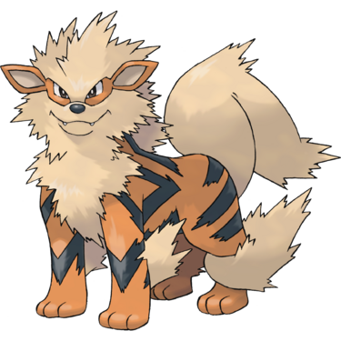
As the first true dog Pokémon introduced in the first generation of 151 Pokémon, Arcanine is often depicted as a strong and loyal companion. However, while its stats are great, they are not optimized due to its fire typing before the physical special split.
Back then, fire type moves used the special attack stat, so Arcanine could not use them with its higher physical attack. It improved with the additions of physical fire moves like Flare Blitz, but a another improvement is the introduction of the ancient Hisui variant of Arcanine with the addition of rock type.
It may seem worse since rock has more weaknesses, but the Rock head ability allows it to spam high damage recoil moves with no drawbacks making Hisuian Arcanine used competitively to this very day.
Read more >>
Granbull
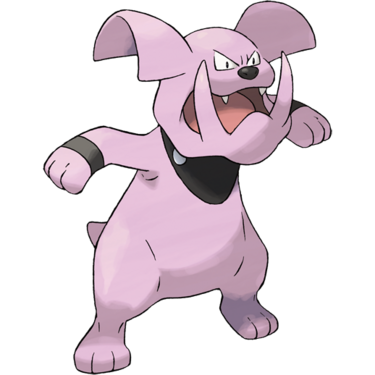
While Granbull is always stated to have strong jaws and looks intimidating at first glace, many Pokédex entries describe it as timid and sensitive. This trait might explain why it changed in recent generations. When it was first introduced back in generation II, it was a mid generic normal type Pokémon with a decent attack stat.
What made it so mediocre was its shallow movepool and lack of utility. However, things would change for Granbull as in generation VI, its type was changed from pure normal to the new incredible fairy type. While it new made Granbull competitively viable at high levels of play, The improvements to its movepool in the present day at least made it good enough for a game playthrough.
Read more >>
Houndoom
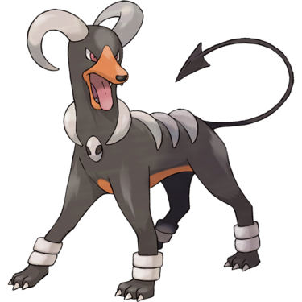
One of the great pioneers of the new dark type introduced in Generation II. As a dark type, one of Houndoom's main purpose is to nerf and wall the psychic types that were overpowered in the previous generation as the dark type was immune to psychic attacks and super effective against them.
Unfortunately it was squandered in its debut region and the remake of the region since you can only find Houndour in Kanto after you beat the game in Johto making Houndoom unavailable for the main game. It also does not appear in many regional dexes making it hard to use in an adventure.
Luckily, Generation VI gave Houndoom a mega evolution, making it more powerful and relevent at least in Generation VI and they are more available in the current generation.
Read more >>
Smeargle
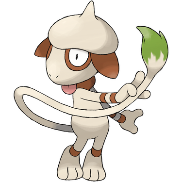
Due to its signature move, Sketch, allowing it to copy any move it sees, Smeargle is quite unique. However, Smeargle might be one of the first gimmick Pokémon with a truly negative reputation. In theory, it is not that bad of a gimmick as it makes Smeargle easily the most customizable. The problem is that Smeargle's stats are so awful that the moves are useless.
Instead, Smeargle has to learn the most toxic status moves in order to be competitively viable and to be fair, it was a good user of Dark Void, the signature move of the mythical Pokémon Darkrai who can never use it in tournaments. Ironically, what makes it good it what also makes it hatedby the community.
In the end, Dark Void was nerved and so was Smeargle. And so this Pokemon continues to exist as just another bad gimmick.
Read more >>
Mightyena
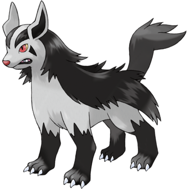
Being the final form of an early route 1 Pokémon, Mightyena is a pitifully mediocre dark type introduced in Generation III. Despite this, it is used as a lead for the evil team leaders and their subordinates thanks to its ability intimidate which is one of the best abilities in the game even competitively.
Despite having access to that ability, Mightyena itself has no redeeming qualities not in moves or in stats. Just an average Pokémon you would use once dump it in the box later when better options are available.
Read more >>
Manectric
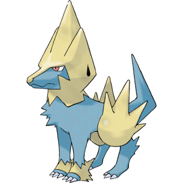
Manectric is a decent electric type pokemon with decent speed and special attack introduces in generation III. It gets even better in generation VI when it gains access to a mega evolution making it an even faster and stronger electric type special attacker.
Read more >>
Lucario
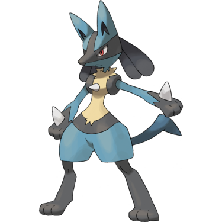
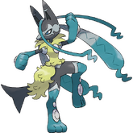
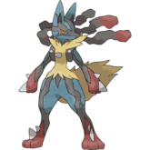
Lucaario needs no introduction. It is one of the most popular Pokémon of all time. Introduced in Generation IV where you have to hatch Riolu from an egg and evolve it to Lucario using friendship. Lucario can be a powerful mixed attacker.
other media also praise this Pokémon as even though it is not a legendary, it gets featured in its own movie and appeared in various films and episodes as an awesome Pokémon that fights by controlling aura being known as the aura Pokémon.
The developers continue to show love to Lucario to this very day because it is one of the few Pokémon that received another mega evolution on top of the one already introduced in generation VI. The new mega Lucario Zis prettey good with a unique ability Aura Guard.
Keep in mind that this was given recently and the regular mega evolution was also iconic since it was given to you for free as part of the story in Pokémon X and Y.
Read more >>
Stoutland
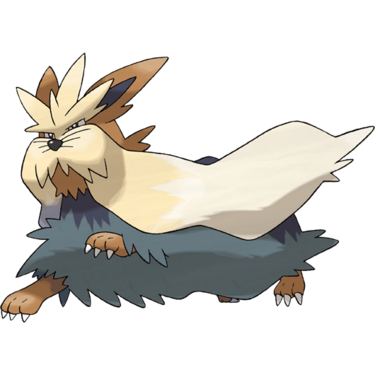
Stoutland is a large, muscular dog-like Pokémon with a thick, shaggy coat. It is the final form of a weak route 1 Pokémon. Despite this it is an OK team member for a playthroough but never a great choice. However, while not being that great competitively, Stoutland is actually the king of Black and White speedruns.
Read more >>
Dusk Form Lycanroc
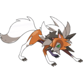
Only the few Rockruff with the Ability Own Tempo evolve into Dusk Form Lycanroc when leveled up during the evening. This third form is said to have been influenced by the setting sun of the evening. It can learn the signature move Accelerock which becomes the Z-Move Splintered Stormshards.
Midday Form Lycanroc
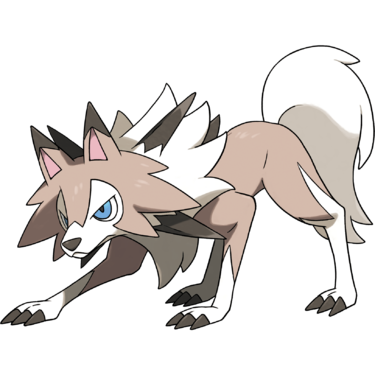
Rockruff with the Abilities Keen Eye, Vital Spirit, or Steadfast evolve into Midday Form Lycanroc when leveled up during the day. It can learn the signature move Accelerock which becomes the Z-Move Splintered Stormshards. This form resembles its previous form Rockruff way more than the other forms.
Read more >>
Midnight Form Lycanroc
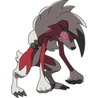
Rockruff with the Abilities Keen Eye, Vital Spirit, or Steadfast evolve into Midnight Form Lycanroc when leveled up at night. It is the only form that cannot learn the signature move Accelerock and the Z-Move Splintered Stormshards by extension.
This and the fact that it is slower than other forms makes the Midnight form the worst and weakest form of Lycanroc.
Boltund
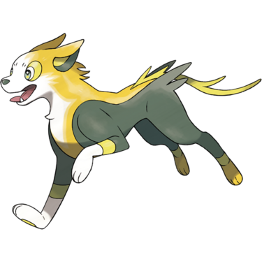
Even though Yamper is a cute dog Pokémon, Boltund is one of the worst Pokémon in the Galar region. Its base stats of attack and special attack are both 90, but the special attack is useless because Boltund primarily wants to learn Physical moves.
That leaves this Pokémon with limited offensive and defensive capabilities when so many better options are available.
Read more >>
Dachsbun
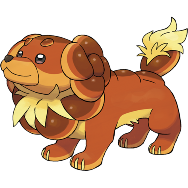
Dachsbun is a fairy type bread-like dog Pokémon introduced in the latest Generation. It has a signature ability called Well-Baked Body that sharply boosts its defense when hit by a fire type move. Despite being mediocre compared to other Pokémon, there is a niche to it in competitive singles because it counters the legendary Pokémon Koraidon.
Read more >>
Mabosstiff
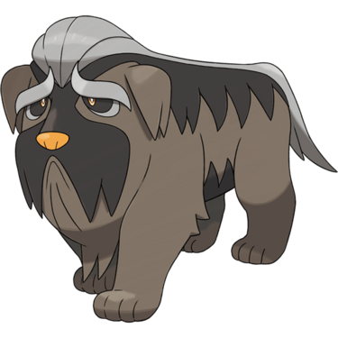
What makes Mabosstiff truly memorable is its role in the story of Scarlet and Violet as the partner Pokémon of Arven who motivates the player to take down powerful titan Pokémon in order to find herbs that will save Arven's Mabosstiff from dying.
Aside from that, it is pretty ok as a dark type intimidator in a playthrough.
Read more >>
Houndstone
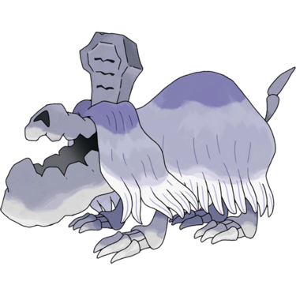
A ghost type dog Pokémon with a unique design and abilities. It is the only Pokemon able to learn the powerful ghost type move Last Respects by level up and the only evolutionary line to hae Fluffy as an ability in generation IX
Read more >>
Pombon
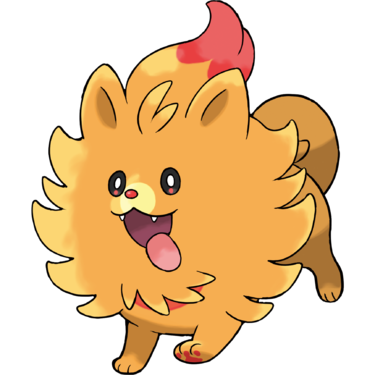
Pombon is the new fire type starter Pokémon that will be introduced in the upcoming Pokémon Winds and Waves in Generation X. As the game has not come out yet, we have no idea what Pombon's final evolution will look like or what type it will gain if any at all.
Read more >>